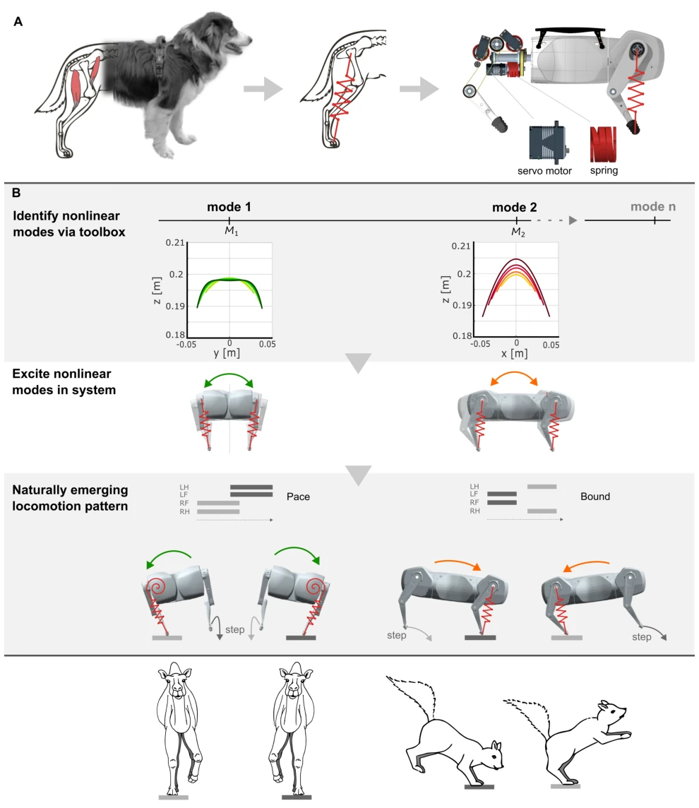
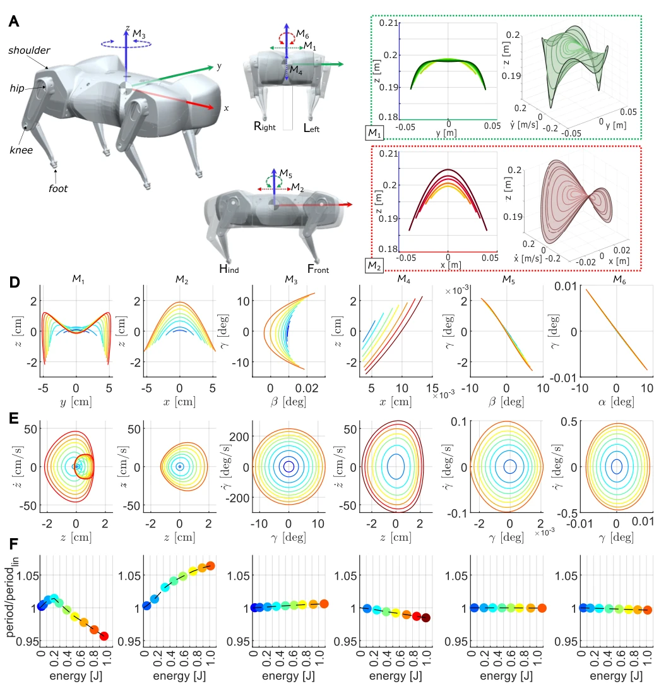
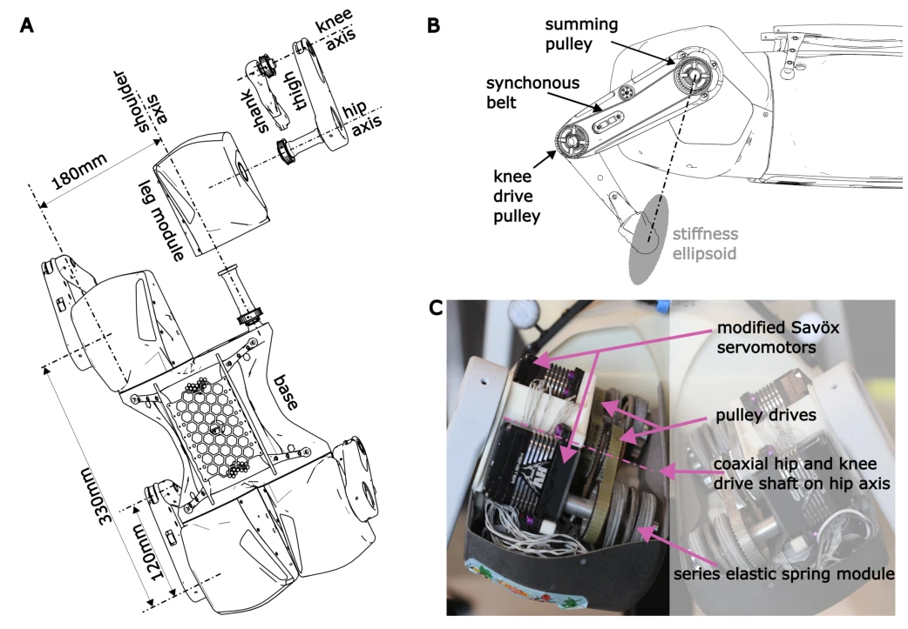
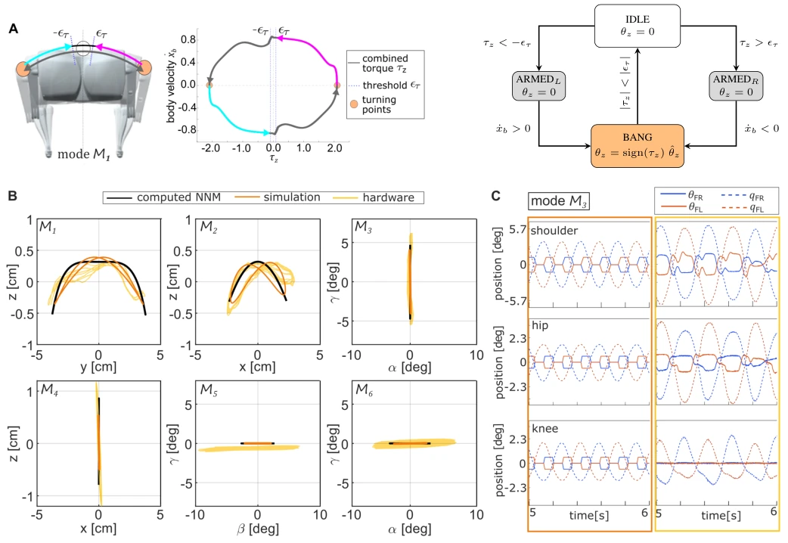
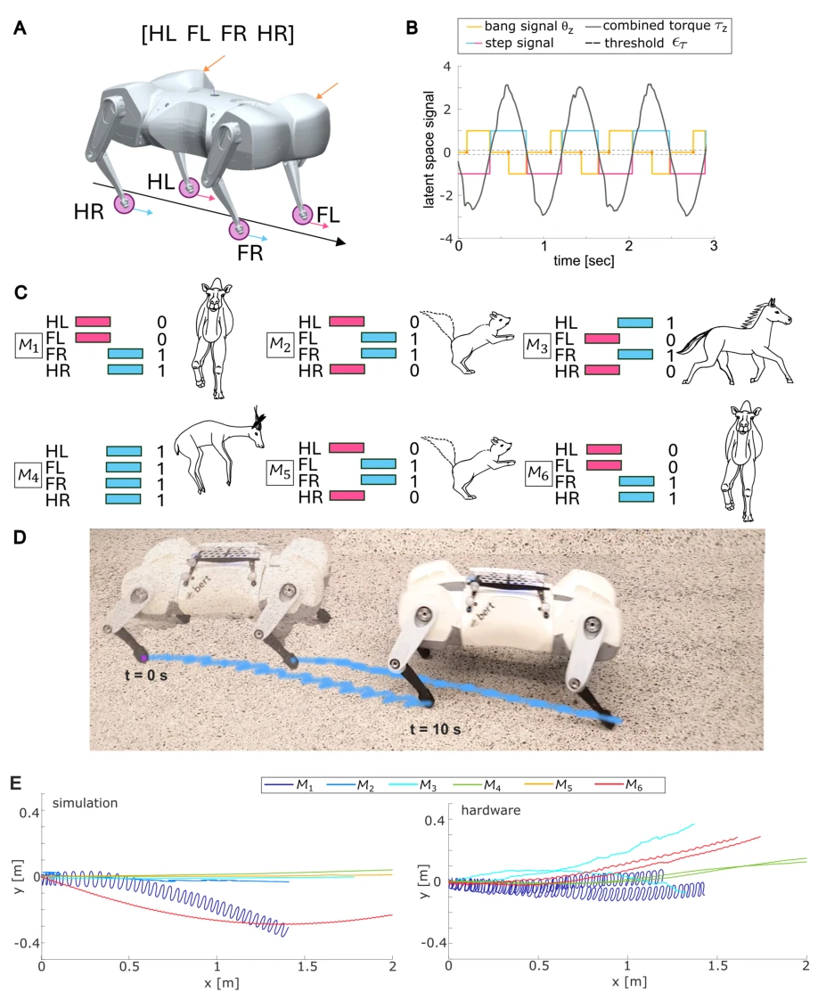

This paper attempts to enable quadruped robots to "walk by themselves" using "nonlinear body oscillations," which sounds attractive, given that biology relies on body resonance rather than rigid control. The eBert robot is indeed quite compliant; the spring stiffness design is thoughtful, successfully identifying six nonlinear normal modes (NNMs), which deserves praise. However, do not over-mythologize "embodied intelligence"; the so-called natural gait is actually maintained by a simple state-switching controller to "push the swing." Friction and mechanical errors create a significant gap between hardware performance and simulation, with some modes even slipping directly. Efficiency evaluation also lags behind; merely stating "natural" does not quantify power savings, and the advantage compared to rigid control systems is not obvious. Overall, it is an interesting theoretical verification demonstrating the dominant role of mechanical structure on locomotion, but it is still far from practical application. Do not expect it to embark on Mars exploration immediately; currently, it resembles more of an expensive physical toy.
Most existing quadruped robots rely on high-gain feedback and rigid actuation, where gaits are dominated by controllers rather than mechanical characteristics [8]. Although biology achieves efficient motion through morphology and neural coupling [10], [11], and animals adjust posture and muscle stiffness at different speeds to utilize resonance [15], [19], robot design often overlooks the potential of mechanical resonance. Early research, such as the SLIP model [33], demonstrated that elastic elements can improve efficiency, but typically only produce gaits with a single dominant resonance. While PAWS [43] and Morti [42] utilized elasticity, they were mostly limited to the sagittal plane or single modes. Nonlinear dynamics are difficult to predict, making it hard to design hardware capable of emerging multiple gaits. This paper aims to use Nonlinear Normal Modes (NNMs) theory to encode mechanical resonance into the design, enabling multi-gait to emerge naturally from physical characteristics rather than relying on complex control, thereby bridging the gap from conservative models to actual hardware.

Fig. 1. Workflow to develop gaits based on embodied intelligence in eBert. (A) Inspired by the elasticity of biological tendons and muscles, the quadruped robot eBert features series elastic actuation with soft springs to implement this function mechanically. High compliance in the hardware design results in a system that naturally displays large amplitude oscillations in different directions. (B) Leveraging the biological concept of embodied intelligence, the natural oscillations encoded in the robotic hardware can be exploited following three key aspects: First, the mathematical description and analysis of the system motions; second, the excitation of nonlinear resonance; and finally, the generation of (loco)motion patterns, leading to gaits that resemble the ones known in animals.
The overall process is divided into hardware design, mode analysis, and control excitation. First, eBert is designed based on small dog dimensions [56] and animal leg stiffness formulas [57], utilizing Series Elastic Actuators (SEAs) to achieve high compliance, ensuring the encoding of multiple functional oscillations. Second, differential geometry and algebraic topology tools [50], [51] are used to analyze the conservative dynamics model, calculating six nonlinear normal modes (NNMs) to describe the system's inherent oscillations. Next, a state-switching controller [59], [60] is employed to compensate for friction, injecting energy at oscillation extrema to maintain NNMs and avoid interfering with natural dynamics. Finally, the controller is extended to trigger foot swing based on the symmetry of the linearized eigenvectors of NNMs, converting mode oscillations into forward gaits. This method simplifies the complex control problem to the excitation and guidance of physical resonance, utilizing mechanical structure constraints to coordinate the search space, achieving dynamic consistency from conservative models to actual hardware.

Fig. 2. Overview of eBert and the nonlinear normal modes encoded in its mechanics. (A) Hardware of the highly elastic quadruped robot eBert crouching. (B) Indication of axes and motion directions of eBert with modes M1-M6 from different perspectives. (C) Exemplary depiction of mode oscillations of M1 (left) and M2 (right), each orbit computed as solution to the equations of motion of the energy-conservative dynamics requiring no control. Plotting motions over respective relevant axes and in state space projections visualizes the nonlinearity. (D) Visualization of each mode by plotting the motion of the robot’s center of mass in the respective relevant axes for different energy levels apparent from (F). (E) Phase diagram of each mode plotted in the relevant axes along which each mode oscill

Fig. 5. Overview of the kinematics and drivetrain of the newly designed eBert robot. (A) Kinematic chain with rigid body base, leg module, thigh and shank, joint names, and key dimensions. (B) Orientation of the resulting stiffness ellipsoid with respect to the leg geometry as a result of the bi-articular coupling drivetrain transferring the summed motion of the hip joint and knee motor to the knee joint via a synchronous belt drive. (C) Drivetrain elements inside a leg module.
The existence and excitation of six NNMs were verified on simulation (including friction) and real hardware. Through the state-switching controller, all modes were stable in simulation; on hardware, M1, M3, M4, and M6 successfully generated gaits (such as pace, trotting, hopping), while M2 and M5 were not fully realized due to transmission slippage. The frequency deviation between simulation and hardware was approximately 10%-20%, mainly attributed to friction and latency. Gait speed varied with mode frequency, consistent with biological observations [17]. Ablation experiments showed that different gaits could emerge with only minimal control, proving the dominant role of mechanical structure. However, hardware efficiency was not evaluated in detail, the stability of some modes was insufficient in real environments, and the performance was not compared with rigid control systems, limiting the universality of the conclusions.

Fig. 3. Excitation of the NNMs in the hardware with a state switching controller. (A) State machine of the switching control to sustain the modal oscillations in the simulation and hardware exhibiting friction, conceptually visualized for mode M1. (B) Overlay of the computed NNM of the conservative system with the Gazebo simulation and hardware system, which both incorporate friction effects. The motions of each mode M1 −M6 are plotted on the respective relevant axes. (C) Example plot for the joints of one robot leg (top: shoulder, middle: hip, bottom: knee) taken from the oscillation of M3 in simulation (orange) and hardware (yellow). The commanded motor signals θ and the robot’s measured link position q are plotted for each joint, visualizing the amplification created by the resonance ef

Fig. 4. Each NNM suggests a matching step pattern to develop a locomotion gait. (A) Definition of the feet naming of the robot with arrows indicating the direction of the step trigger (blue/pink) and bang-signal (orange). (B) Control signals commanded in 1D-control space to trigger the bang-bang signal (yellow) and forward steps (blue/pink) based on the combined torque signal of all joints τz and the body velocity. (C) For each mode, M1 −M6, a matching step pattern can be identified, where a binary encoding can express which feet move together. (D) Visualization of the robot moving forward in a pace-like gait developed from M1 indicating the motion of the right foot pair. (E) Top view of the robot’s COM moving forward is based on the oscillations of the different modes in simulation (left)